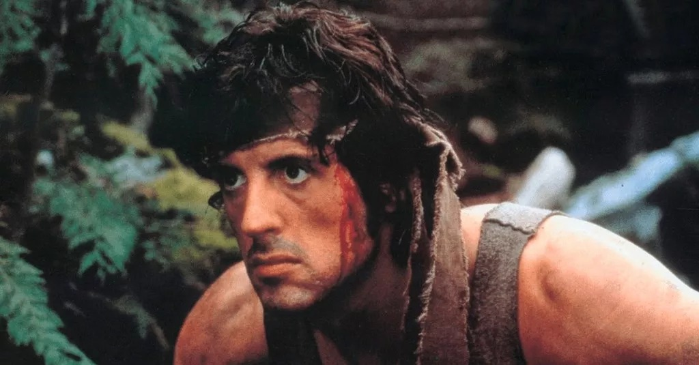

RAMBO: FIRST BLOOD

O boina verde John Rambo (Stallone) após dar baixa, retorna ao seu país. Durante a Guerra do Vietnã após muitas missões de infiltração em campo inimigo, acabou por tornar-se prisioneiro de guerra dos norte-vietnamitas. O cativeiro lhe gerou profundos traumas psicológicos devido à tortura e privações. Ao executar um elaborado plano de fuga e atravessar boa parte das úmidas florestas vietnamitas, consegue retornar às linhas amigas e assim mesmo com inúmeras honras militares e condecorações decide que é hora de abandonar as armas e voltar para casa. De volta aos Estados Unidos decide primeiro ir procurar um velho amigo que fora colega no exército, mas sua tentativa acaba por resultar em fracasso, pois seu amigo, há alguns anos, havia falecido de câncer resultante do agente laranja. Sem mais opções segue para o sul seguindo a viagem de retorno para casa. Reconhecido como um vagabundo andarilho, Rambo é detido injustamente pelo xerife de uma pequena cidade que estava no caminho, que no livro é um veterano da guerra da Coréia, mas ao fugir, acaba sendo caçado pela polícia local como um criminoso. Quando começa o cerco à montanha onde se refugia, ele começa uma verdadeira guerra não só contra os policiais, mas também ao xerife que o prendeu. Ferindo-os ele acaba chamando a atenção do exército, seu velho comandante, que agora busca ajudar o exército e a polícia local a prendê-lo.